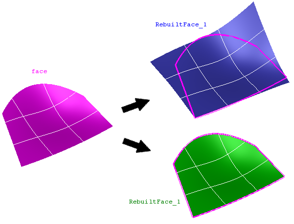

cfdmsh 4.0 documentation
cfdmsh 4.0 documentation cfdmsh 4.0 documentation


Rebuilds a face using its iso-lines.
This function creates iso-curves on the face, making varying both u and v parameters from 0 to 1. Then, it creates a filling from the curves. If it is asked by the user, the rebuild face is finally relimited using the source face edges.
def RebuildFace( np = 30, face = None, rel = False, switch = False, tol = 1e-7, single = True, add = True, infa = False, dim = 2 ):

| Name | Description | Type | GUI selection [?] | Selection by name [?] | Recursive [?] | Default value |
|---|---|---|---|---|---|---|
| np | See here. In addition, if this argument is an list of 2 integers, the first number gives the number of isolines created to rebuild the face and the second number gives the number of points used to create each isoline (see the above script example). |
Integer or List of 2 Integers |
- | - | - | 30 |
| face | The face to rebuild. | Face | yes | yes | yes | None |
| rel | If equals True, the function try to relimit the rebuild face using the source face edges. | Boolean | - | - | - | False |
| switch | If equals True, the iso-curves are switched from iso-u to iso-v. | Boolean | - | - | - | False |
| tol | See here. | Float | - | - | - | 1e-7 |
| single | See here. | Boolean | - | - | - | True |
| add | See here. | Boolean | - | - | - | True |
| infa | See here. | Boolean | - | - | - | False |
| dim | See here. | Integer | - | - | - | 2 |
| dim Value [?] | single Value [?] | Type | Number | Name |
|---|---|---|---|---|
| 0 | False | Vertex | n | "RebuiltFace (Vertex)" |
| 0 | True | Compound of Vertexes | 1 | "RebuiltFace (Vertexes)" |
| 1 | False | Edge | n | "RebuiltFace (Edge)" |
| 1 | True | Compound of Edges | 1 | "RebuiltFace (Edges)" |
| 2 | - | Face | 1 | "RebuiltFace" |
from cfdmsh import * # To adapt to the cfdmsh installation method
vertexes1 = []
vertexes1.append(geompy.MakeVertex(-75, 70, 150))
vertexes1.append(geompy.MakeVertex(-150, 50, 60))
vertexes1.append(geompy.MakeVertex(-110, -75, 50))
vertexes2 = []
vertexes2.append(geompy.MakeVertex(100, 70, 140))
vertexes2.append(geompy.MakeVertex(130, -50, 120))
vertexes2.append(geompy.MakeVertex(100, -100, 20))
wire2 = geompy.MakePolyline(vertexes2)
wire1 = geompy.MakePolyline(vertexes1)
curve1 = geompy.MakeEdge(vertexes1[0], vertexes2[0])
curve2 = geompy.MakeEdge(vertexes1[-1], vertexes2[-1])
face = geompy.MakeFaceWires([wire1, wire2, curve1, curve2], False)
AddToStudy(face, "face")
rebuilt_face = RebuildFace([2, 10], face, )
rebuilt_face_vertexes = RebuildFace([2, 10], face, dim = 0)
rebuilt_face_edges = RebuildFace([2, 10], face, dim = 1)
relimited_rebuilt_face = RebuildFace([2, 10], face, rel = True)
-
cfdmsh 4.0 documentation
tougeron-cfd.com © 2016